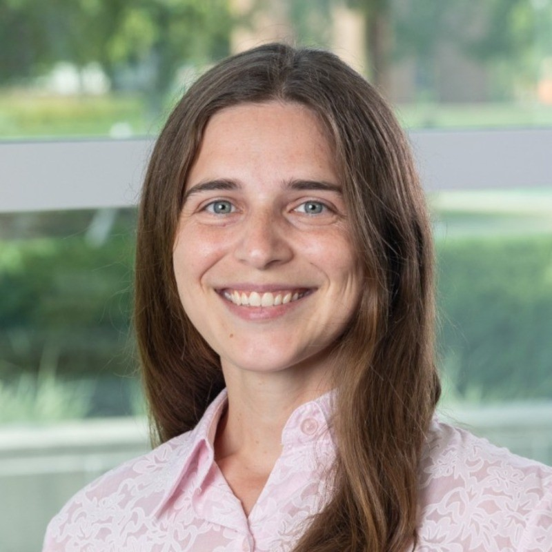
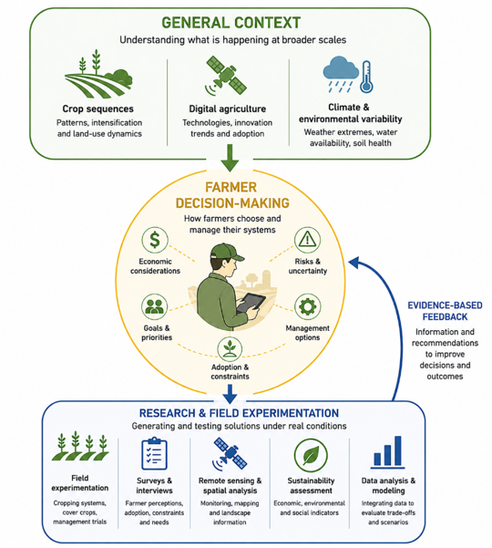

Postdoctoral Researcher · Purdue University
Department of Agronomy. Cropping Systems & Digital Agriculture. PI: Ignacio Ciampitti.

Cropping Systems · Digital Agriculture · Sustainable Intensification
About
My mission is to contribute to improving the sustainability and resilience of farming systems. This requires integrated assessment, considering impacts of different drivers — climate, policy, markets, and technology — on different dimensions of sustainable development, including economic, environmental, social, and institutional dimensions, as well as resilience, including robustness, adaptability, and transformability.
When addressing the farming system level, impacts from crop to global level are relevant. I use both quantitative and qualitative approaches to study farming systems across scales, integrating statistical analyses, remote sensing, crop modeling, and survey-based research. Based on a description and explanation of current systems, future systems can be explored and designed.
My vision is that technological innovations should be accompanied by social and institutional changes to improve the sustainability and resilience of farming systems.
Current Research
My research focuses on understanding how agricultural systems can become more productive, resilient, and environmentally sustainable while remaining feasible under real farming conditions.
Broadly, I study the interactions among agronomic management, environmental variability, technological innovation, and farmer decision-making, with particular emphasis on crop diversification, sustainable intensification, and digital agriculture.
My work integrates field experimentation, remote sensing, spatial analysis, and survey-based approaches to evaluate agricultural systems across multiple scales, from regional patterns of land use and technology adoption to field-level management practices and sustainability outcomes.
Ultimately, my goal is to generate interdisciplinary and applied research that not only advances scientific understanding, but also supports practical and informed decision-making for farmers and agricultural stakeholders.

Experience
Department of Agronomy. Cropping Systems & Digital Agriculture. PI: Ignacio Ciampitti.
Research on agricultural technologies, nutrient management, and decision-support systems.
Data Intensive Farm Management group.
Long-term field experimentation on crop rotations and sustainable intensification in the Argentine Pampas.
Selected work
Cano, P. B., Cabrini, S. M., Peper, A. M., & Poggio, S. L. (2023). Agricultural Systems, 210, 103723.
Multi-criteria assessment of cropping systems integrating economic, environmental, and social indicators to evaluate sustainable intensification pathways in the Argentine Pampas.
Cano, P.B., Mandrini, G., Erickson B., et al. (2026). Farmer Perspectives on Digital Agriculture in the US Midwest. Agronomy Journal.
Cano, P.B., Cabrini, S.M., & Poggio, S.L. (2025). Decision-making on crop sequence diversification in the Argentine Pampas. Land Use Policy.
Cano, P.B., Carcedo, A.J., Hernandez, C.M., et al. (2025). Trends in agricultural technology: a review of US patents. Precision Agriculture.
Teaching & mentoring
Teaching Assistant, AGR 59500: Research Fundamentals in the Era of AI.
Teaching Assistant in Agricultural Economics and Experimental Design.
Mentoring graduate and visiting scholars in experimental design, data analysis, and interpretation.
Curriculum vitae
Download my full academic CV for publications, conference presentations, grants, honors, and service.
Download CV